8.4 Exercícios finais
E 8.4.1. O valor exato da integral imprópria é dado por
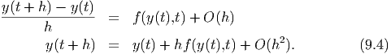 Aproxime o valor desta integral usando a regra de Simpson para 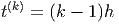,
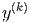 e 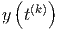. Como você avalia a qualidade do resultado obtido? Por
que isso acontece.
Resposta. -0.2310491, -0.2452073, - 0.2478649.
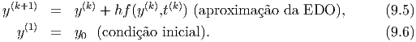
E 8.4.2. O valor exato da integral imprópria 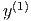 é dado por 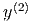.
Escreva esta integral como
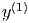 e aproxime seu valor usando o esquema de trapézios e Simpson para 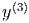,
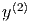 e 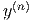.
E 8.4.3. Estamos interessados em avaliar numericamente a seguinte integral:
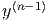
cujo valor com 10 casas decimais corretas é 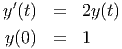.
- Aproxime esta integral via Gauss-Legendre com 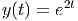,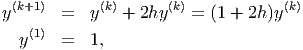,
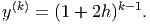, 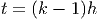, 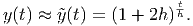 e 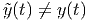.
- Use a identidade
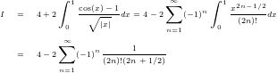
e aproxime a integral 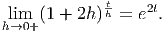 numericamente via
Gauss-Legendre com  , 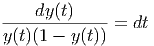, 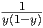, 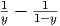, 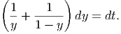 e
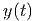.
, 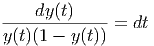, 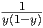, 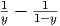, 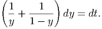 e
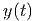.
- Compare os resultados e discuta levando em consideração as respostas às
seguintes perguntas: 1)Qual função é mais bem-comportada na origem?
2)Na segunda formulação, qual porção da solução foi obtida analiticamente
e, portanto, sem erro de truncamento?
Resposta. a)-0.2472261, -0.2416451, -0.2404596, -0.2400968, -0.2399563, -0.2398928. b)-0.2393727, -0.2397994,
-0.2398104, -0.2398115, -0.2398117, -0.2398117.
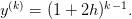
E 8.4.4. Considere o problema de calcular numericamente a integral
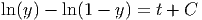 quando .
- O que acontece quando se aplica diretamente a quadratura gaussiana
com um número impar de abscissas?
- Calcule o valor aproximado por quadratura gaussiana com 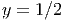,
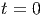, e 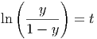.
- Calcule o valor aproximado da integral removendo a singularidade
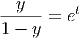
e aplicando quadratura gaussiana com 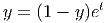, 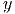, 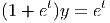 e
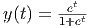.
- Calcule o valor aproximado da integral removendo a singularidade,
considerando a paridade da função
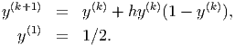
e aplicando quadratura gaussiana com 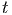, 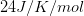, e
.
- Expandindo a função
 em série de Taylor, truncando a série
depois do 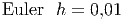-ésimo termos não nulo e integrando analiticamente.
em série de Taylor, truncando a série
depois do 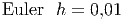-ésimo termos não nulo e integrando analiticamente.
- Aproximando a função pelo polinômio de Taylor de grau 4 dado
por
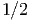 e escrevendo
Resposta.
|
|
|
|
|
|
| n | b | c | d | e | f |
|
|
|
|
|
|
| 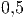 | 2.205508 | 3.5733599 | 3.6191866 | 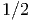 | 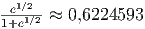 |
|
|
|
|
|
|
| 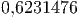 | 2.5973554 | 3.6107456 | 3.6181465 | 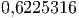 | 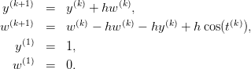 |
|
|
|
|
|
|
| 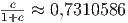 | 2.7732372 | 3.6153069 | 3.6181044 | 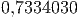 | 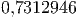 |
|
|
|
|
|
|
| 2.880694 | 3.6166953 | 3.6180989 | | |
|
|
|
|
|
|
| |
Solução do item e: Como
temos
Logo,
podemos integrar
Solução do item f)
E 8.4.5. Calcule numericamente o valor das seguintes integrais com um erro
relativo inferior a .
E 8.4.6. Calcule as integrais e usando
procedimentos analíticos e numéricos.
E 8.4.7. Use a técnica de integração por partes para obter a seguinte
identidade envolvendo integrais impróprias:
Aplique as técnicas estudadas para aproximar o valor de I e explique por
que a integral da direita é mais bem comportada.
E 8.4.8. Resolva a equação
com 5 dígitos significativos.
E 8.4.9 (title=Ciência dos materiais). O calor específico (molar) de um
sólido pode ser aproximado pela teoria de Debye usando a seguinte expressão
onde é a constante de Avogrado dado por e é a
constante de Boltzmann dada por

. é temperatura de
Debye do sólido.
- Calcule o calor específico do ferro em quando ,
e supondo
 .
.
- Calcule a temperatura de Debye de um sólido cujo calor específico a
temperatura de é . Dica: aproxime a integral por
um esquema numérico com um número fixo de pontos.
- Melhore sua cultura geral: A lei de Dulong-Petit para o calor específico
dos sólidos precede a teoria de Debye. Verifique que a equação de Debye
é consistente com Dulong-Petit, ou seja:
Dica: use quando
Resposta. a)19.2, 22.1, 23.3 b)513.67K